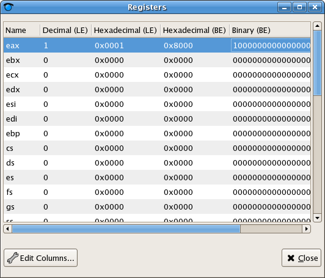

Register Window
The register window provides an interface to view and edit the values
of the system registers for a given Thread. It allows the register values
to be displayed in a variety of formats (Decimal, Hex, Binary, etc) and in
little and big endian format
- The register window is launched from the 'View' menu of the source
window
- The names of the registers are displayed in the leftmost column, and the
value of the register in the right column
- Clicking on 'Edit Columns...' brings up a dialog to edit the formats that
the register value will be displayed in. Checking the box next to a format
will cause that format to be displayed in the register window. The topmost
format will be the first to be displayed going left to right, the bottommost
will be the last. Clicking on 'Up' or 'Down' will move the currently selected
format higher or lower in the list respectively.
- After closing the 'Edit Columns' dialog the selected formats are now
displayed in the register window

- Double clicking on the value of a register in any format will allow the
user to edit the value of that register
|